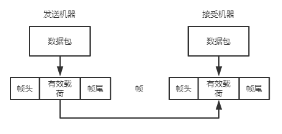

数据链路层是网络模型的第二层，涉及两台机器实现可靠有效地完整信息块(称为帧)通信的一些算法。通信线路偶尔会出错，而且它们只有有限的数据传输率，比特的发送时间和接受时间之间存在一个非零延迟。这些限制对数据传输的效率有非常重要的影响，通信协议必须要考虑所有的这些因素。
功能与服务
数据链路层使用物理层提供的服务在通信信道上发送和接受比特。那它要完成的功能有哪些呢？
- 向网络层提供一个定义良好的服务接口.
- 处理传输错误(错误控制).
- 调节数据流，确保慢速的接收方不会被快速的发送方淹没(流量控制).
为了实这些目标，数据链路层从网络层获得数据包(package)，然后将这些数据包封装成帧(frame)以便传输。每个帧包含一个帧头、一个有效载荷(用于存放数据包)、一个帧尾。

数据链路层通常会提供以下3种可能的服务：
- 无确认的无连接服务。源机器向目标机器发送独立的帧，目标机器并不对这些帧进行确认。采用这些服务，事先不需要建立连接，事后也不用释放逻辑连接。若由于线路的噪声而造成了某一帧的丢失，数据链路层并不试图去检测这样的丢帧情况，更不会试图去恢复丢失的帧。以太网就是一个极好例子。这类服务适合两种场合，一是错误率很低的场合和可靠的信道，此时差错恢复过程可以留给上层来完成；二是实时通信，比如语音传输，因为在实时通信中数迟到比数据受损更糟糕。
- 有确认的无连接服务。数据链路层仍然没有使用逻辑连接，但发送的每一帧都需要单独确认。这样发送方就知道一个帧是否已经正确到达目的地，如果在指定时间没有到达，则发送方将再次发送该帧。这类服务适用于不可靠的信道，比如无线系统，802.11(WiFi)就是一个很好的例子。
- 有确认的有连接的服务。采用这种服务，源机器和目标机器在传输任何数据前要建立一个连接，相当于为网络层进程提供了一个可靠的比特流。数据传输必须经历三个不同的阶段：第一阶段，双方初始化变量和计数器建立连接；第二阶段，真正传输数据帧；最后一个阶段，连接释放，所有变量、缓冲区和资源都被释放。连接发送的每一帧都被编号，数据链路层保持每一帧会真正被接收方收到且只被接受一次，并按正确的顺序被接受。适用于长距离且不可靠的链路，比如卫星信道或长途电话。
这三类服务，要求的信道越来越低(从可靠到不可靠)，速度越来越慢，因为需要确认和重传，带宽效率也会降低，但协议本身的可靠性增强。
成帧
物理层所做的只是把一个原始比特流从源机器传递给目标机器，而对于数据链路层来说，帧的大小是有限制的，通常的做法是将比特流拆分成多个离散的帧，为每个帧计算生成校验和，并将该校验和放在帧中一起传输。拆分比特流的实际工作比初看上去的要复杂得多，一个好的设计方案必须使接收方很容易发现一个新帧的开始，同时所使用的信道带宽要少。我们将考察下列4种方法：
- 字节计数法。利用帧头的一个字段来标识该帧中的字符数。如果计数值因为传输错误而被弄混，这个方法的问题就很严重。假设一帧中的计数值5传输错误变成7，那么接收方就会失去同步，再也找不到下一帧的正确起始位置。当检测到校验和不正确后，就必须重传该帧及其以后所有的帧，故该方法很少被使用。
- 字节填充的标志字节法。其考虑到了出错之后的重新同步问题，它使用称为标志字节(flag byte)的特殊字节作为帧的起始和结束分界符，这样即使接收方失去了同步，它只需搜索两个FLAG字节就能找到当前帧的结束和下一帧的开始位置。
不过当标志字节出现在数据中，尤其是传输二进制数据(比如照片或歌曲)时，这种情景会严重干扰到帧的分界。可以让发送方的数据链路层在数据中“偶尔”出现的每个标志字节前插入一个特殊的转义字节(ESC)来解决这个问题。因此只有看标志字节前有没有转义字节就可以区分出作为帧分界符的标志字节和数据中出现的标志字节，接收方在传递给其网络层时必须删除转义字节。这称为字节填充(byte stuffing)。如果转义字节也出现在数据中，就增加一个转义字节来填充，以此类推。 - 比特填充的标志比特法。字节填充只能使用8比特的字节，而该方法帧的划分可以在比特级完成，帧可以包含任意大小单元组成的二进制比特数。帧的起始和结束依然使用8比特标识为01111110或十六进制0x7E的特殊比特模式，当发送方在数据中遇到连续五个1时就在其后插入一个比特0，这样接收方在看到5个1后面紧跟一个0时就自动删除比特0，看到连续6个1时就能确认这是帧的起始或结束位置。
该方法确保了转换的最小密度，有助于物理层保持同步，我们常见的USB(Universal Serial Bus, 通用串行总线)就采用了比特填充技术。 - 物理层编码违禁法。在物理层比特编码成信号通常包括一些冗余，这些冗余信号不会出现在数据中。例如在有效地同步时钟使用的4B/5B线性编码模式下，4的数据位被映射成5个信号比特，这意味着32个信号中有16个信号时不会被使用的，我们就可以利用这些称为“编码违法”的保留信号来作为帧的起始和结束分界符。
差错控制(Error Control)
如何确保所有的帧都以正确的顺序都被并不会重复传递给目标机器的网络层。通常情况下，协议要求接收方发回肯定或否定的确认控制帧，如果发送方收到了某一帧的肯定确认，它就知道这帧已经安全正确的到达了，相反否定的确认意味着传输过程产生了错误，该帧就必须重传。
当然在实际的传输过程中情况会很复杂。如果只是一帧中某些比特传输错误，通过校验和来检查出错误并让发送方重传该帧就可以解决；如果由于硬件文件产生了一个突发噪声，一个帧被完全丢失了，接收方就不会有任何反应；类似地，如果确认帧丢失，发送方也不知道该如何处理。显然在一个协议中发送方发送一帧后就等待确认帧，若由于硬件故障或通信信道错误等原因而丢失了某一帧，则发送方将永远等待下去。
无论如何源机器都必须把帧传输给目标机器的问题可以引入计时器来解决。当发送方发出一帧时，启动一个计时器，该计时器的超时值应该设置得足够长，以便保证正常情况下该帧能到达接收方并处理后再将确认帧返回给发送方，这时计时器被取消。如果该帧或者确认帧丢失，计时器都会被触发，然后发送方重新发送该帧。
然而当某个特定的帧被发送了多次后，接收方将两次或者多次接收到同一帧，并多次将它传递给网络层。为了避免发生这样的情形，一般有西药给发送出去的帧分配序号，这样接收方可以根据帧的序号来有效区分原始帧和重传帧，如果是重传帧就直接丢弃。
管理好计时器和序号，以便保证每一帧最终都恰好一次地传递给目标机器的网络层。
流量控制(Flow Control)
一个设计问题是如果发送方发送帧的速度超过了接收方能够接受这些帧的速度，发送方该如何处理。例如发送方运行在一台高速且功能强大的计算机上，而接收方运行在一台慢速且低端机器上，一个常见的场景是一个智能手机向一个超强服务器请求一个Web页面，手机无法以数据到来的速度那样快地处理持续到来的帧，此时必然会丢弃一些帧。
常用两种方法来阻止这种情况发生。第一种方法是基于反馈的流量控制(feedback-based flow control)，接收方给发送方返回信息帧，允许发送方发送更多的信息。该方案可同时出现的链路层和更高的层次，较为常见；第二种方法是基于速率的流量控制(rate-based flow control)，使用这种方法的协议有一种内置的机制，能限制发送方传输数据的速率，而无须利用接收方的反馈信息，该方案仅在传输层实现。
差错检测和纠正
不同的通信信道有不同的特征，有线光纤错误率很低，很少发生传输错误，而无线的错误率高出光纤好几个数量级，传输错误是常态。网络设计者针对这两种错误处理已经研究出两种基本策略，这两种策略都在发送的数据中加入冗余信息。在高度可靠的信道上(比如光纤)使用检错码(error-detecting code)，这种策略包含少量的冗余信息可以让接收方推断出是否发生了错误(而推断不出哪个发生了错误)，当偶尔发生错误时只需重传错误的数据帧；在错误发生很频繁的信道上(比如无线链路)使用纠错码(error-correcting code)，这种策略包含包含足够多的冗余信息，以便接收方能够计算出原始的数据块，因为重传的数据块本身也可能像第一次传输那样出错。
错误模型有两种。一种是偶尔出现的极端热噪声快速淹没了信号，引起孤立的单个比特错误，这样大多数数据帧都会包含一个错误，但每个帧的错误范围都很小，可能是一个比特发送错误；另一种是传输错误往往呈现大面积连续性，这种错误源自物理过程，比如无线信道上一个深衰落或者有线信道上的瞬态电气干扰，这样可能100个数据帧只有一个发生错误，但这一块上比特基本都是错误的，它比单个错误更难纠正。
纠错码也会出现在物理层，特别是有噪声干扰的信道，同时还会出现早更高的层次，特别是实时流媒体应用和内容分发应用。检错码经常被用在链路层、网络层和传输层。
纠错码(Error-Correcting Code)
所有的编码都将冗余信息加入到待发送的信息中，一帧由m个数据位(即信息)和r个冗余位(即校验)组成。在系统码(systematic code)中直接发送m个数据位，然后发出r个校验位；在线性码(line code)中r个校验位和m个数据位是线性函数关系，该函数一般采用异或(XOR)或模2加运算，这意味着编码过程可以使用诸如矩阵乘法或简单逻辑电路来完成；在块码(block code)中r个校验位和m个数据位是其他非线性函数关系。
模2运算：是一种二进制算法，不考虑进位和借位。模2加和模2减等同于“异或”运算；模二乘先进行“并”(AND)运算，乘完后对中间结果采用模2加得出结果；模二除时位数低于除数记为0，相同记为1，并进行模2减。
海明码(Hamming Code)。从左到右编号，校验码r必须放在2的幂次方位置(2^0=1,2^1=2,2^2=4,2^3=8,2^4=16,…)，非2^n次方位置用来填充m个数据位，这样就能确认一个不等式
m+r≤2^r-1，知道了传输几个数据比特，就能确认校验位数。
校验原则：第i位校验码从当前位，每次连续校验i位后再跳过i位，再校验i位再跳过i位，以此类推。这样可以保证有且只有一个校验位和多个数据位在一个校验组，并且每个数据位会在多个校验组中。
各校验位和它所在的位组中的数据位进行异或运算(p为校验位，b为数据位)：
G1=p1⊕b1⊕b2⊕b4⊕b5⊕……
G2=p2⊕b1⊕b3⊕b4⊕b6⊕b7⊕b10⊕b11⊕……
G3= p3⊕b2⊕b3⊕b4⊕b8⊕b9⊕b10⊕b11⊕……
G4= p4⊕b5⊕b6⊕b7⊕b8⊕b9⊕b10⊕b11⊕……
我们会发现每组校验中只有一个校验位，每个数据位至少在两组中，假设我们采用偶校验，Gn结果都是0。如果接收方最终发现只有一个校验组结果是1，则直接可以知道是对应校验组中的校验码在传输过程中出现了差错；如果有两个或多个校验组的偶校验结果是1，则可以确认是这些校验组中共有的数据位传输出现了差错。
不过海明码只具有纠正一位错误的能力，检测并确定出错误位，直接对错误位进行取反即可。二进制卷积码(Binary Convolutional Code)。属于系统码范围。编码器处理一个输入位序列，产生两个输出位序列，编码器有内存，输出结果取决于当前的输入和以前的输入，一般是输入位和内部状态的异或XOR和。

内部状态保存在6个内存寄存器中，每输入一位，寄存器的值就右移一位。例如输入序列为111，初始状态都是0，把这3个1依次输入后，内部状态变化为100000、110000和111000，对应的输出位是11、10和01。这个过程需要7次移位才能完全清空输入。
解码过程会逐个检查观察到的序列，记住每一步和输入序列的每个可能内部状态，即输入序列产生观察序列可能产生的错误，最终那个具有最少错误的输入序列就是最有可能的消息。
卷积码已经非常流行，被广泛应用于实际部署的网络中，比如GSM移动电话系统和无线802.11中。里德所罗门码(Reed-Solomon Code)。它对m位符号进行操作，而不是针对单个位处理。
这个编码方案基于这样的事实：每一个n次多项式是由n+1个点唯一确定。例如一条具有ax+b形式的直线由两个点所决定。两个数据点代表了一条线，我们加两个冗余额外的校验点，如果收到其中一个点出现错误，三个点将处在同一条直线上，只要找到这条线，我们就可以纠正错误。
里德所罗门码实际行被定义成一个在有限域上操作的多项式，对于m位字节，码字长为(2^m-1)个字节，一般的选择是m=8，故码字为255个字节长。(255, 233)码被广泛使用，它在233个数据字节上增加了32个冗余字节。对于2t个冗余字节，能后纠正传输符号中的任意t个错误，意味着32个冗余字节能纠正多达16个字节错误
这种编码在解决大面积连续错误时纠错性能很好，被用在DSL、线缆通信和CD光盘。因为卷积码在处理孤立的比特错误时很有效，而里德所罗门码可以横扫突发错误，所以这两者结合能很好地完成纠错。低密度奇偶检验码(LDPC, Low-Density Parity Check)。每个输出位由一小部分的输入位形成，这样使得编码可以用一个1的密度很低的矩阵来表示，接收到的码字通过一个近似算法解码获得，该算法通过迭代不断改进接收到的数据和合法码字的最佳匹配。
LDPC码对大块数据具有出色的纠错能力，其性能优于其他编码，正在迅速被新的协议才采纳，成为数字视频广播、万兆以太网以及最新版本802.11无线标准。
检错码(Error-Detecting Code)
接下来将考察3中线性码性质的检错码：
- 奇偶。对码字中数据位进行异或运算，把得到的单个奇偶校验位附加到数据后，不过单个校验位只能可靠的检测出一个错误，如果数据块连续错误造成严重乱码，错误被检测出来的错误只有0.5。比较好的策略是把每个数据块作为一个n位宽和k位高的长方形矩阵来处理，为每一行计算和发送一个校验位，因连续突发错误一般都会整行都出错，我们可以使用交错校验，改成为每列计算校验位，k行发送全部数据，最后一行发送n个校验位，这样能大幅度提高每列只有一个比特错误的概率，提高针对突发错误的更好保护。
- 校验和(CheckSum)。对数据位进行各种类型的求和计算，其中奇偶校验就是校验和的一个例子，校验和通常放置在消息的末尾，通过对整个接收的码字进行求和计算就能检测出错误，计算结果是零表示没有错误。
例如Internet校验和是按16位字节计算得出的消息位总和，以补码运算，它有效而简单，但在某些情况下提供的保护很弱。一个更好的选择是Fletcher校验和，它包含一个位置组件，将数据和其位置的乘积添加到总和中。 - 循环冗余校验(CRC, Cyclic Redundancy Check)。也称为多项式编码(Ploynomial Code)，其基本思想是：双方先约定一个长度为n的比特模式G，最高位和最低位必须是1，发送帧M的位数必须比该模式G要长，然后在该帧的低位端加上(n-1)个0。然后用修饰过的帧M模2除以比特串G，那生成的余数作为校验和替换帧M对应的低位端，这样附加之后的帧就能被比特串除尽。接收方也进行模2除运算，如果有余数表明传输错误。
这个方法能有效地检测除错误。假设接收方收到帧不是M而是M+E，那么M/G可以被除尽，而E/G被除尽的概率很小，如果E中有k个1就表明发生了k个1位错误。其中一个被用在以太网上效果很好的33位特殊比特串为：100000100110000010001110110110111，它能检测到长度小于等于32的所有突发连续错误以及影响到奇数位的全部突发连续错误。
虽然计算CRC运算看似很复杂，但在硬件上通过简单的移位寄存器电路很容易计算和验证CRC。
数据链路层协议
当数据链路层收到来自网络层的数据包，就在包前后增加一个有控制信息的头部和有校验和的尾部。一个帧由4个字段组成：kind、seq、ack和info，其中前3个包含了控制信息，也就是帧头，最后一个可能包含了要被传输的实际数据。kind字段指出帧中是否有数据，seq用作序号，ack作为确认。
单工停-等式协议(Stop-And-Wait)
为了保证每一帧最终都恰好一次地传递给目标机器的网络层，协议要求接收方收到帧后返回一个确认帧；解决帧丢失的问题就是发送方发送完一帧后增加一个计时器，超时重新发送该帧；通过在每一帧增加序号就能解决接收方重复收到同一帧的问题，只需丢弃重复帧即可；而为了防止高性能高流量速率的发送方用数据把低速率低性能的接收方淹没，就让接收方给发送方提供反馈信息，发送方发出一帧后，根据协议要求必须等待一段时间直到许可帧到达。
发送方发送一帧，等待对方确认到达后才能继续发送，这样的协议称为停-等式协议(Stop-And-Wait)。
滑动窗口协议(Sliding Window)
单工协议数据帧只能在一个方向上传输，显然在大多数实际环境中，往往需要两个方向上同时传输数据，即双全工数据传输。一般在同一条链路来传输两个方向上的数据，在这种模型中，从机器A到机器B的数据帧可以与从机器A到机器B的确认帧混合在一起，接收方只要检查入境帧头部的kind字段，就可能区分出该帧是数据帧还是确认帧。为了更好的利用信道带宽，当达到一个数据帧时，接收方不会立即发送确认帧，而是等待网络层传递给它下一个要发送的数据包，将确认帧附加搭载在下一个处境数据帧上，这称为捎带确认(Piggybacking)。为了解决捎带确认中等待网络层多长时间的问题，一般数据链路层必须采用某种字组织方法，等待一个固定的毫秒数。
为了避免帧的停-等问题，发送方和接收方都维持着有n个序号的缓冲窗口，两个窗口不必有同样的上下界，甚至也不必有同样的大小。发送方维持一个发送窗口(Sending Window)，发送窗口内的序号代表了可以被发送的帧，或者已经被发送但还没有被确认的帧，每收到一个确认后，窗口下边界向前移一格，指针向前一步，；接收方维持一个接收窗口(Receiving Window)，序号代表可以接收的帧，任何落在窗口外的帧都将被丢弃，当它把一帧传递给网络层后窗口的下边界就向前移一格。
这样就可以使用同时发生多个帧的管道化(pipelining)技术，如果在传输过程中出现错误，位于数据流中间的一个帧损坏或丢失，在发送方发现问题之前大量的后续帧已经发出并且即将到达接收方，接收方会丢弃损坏的帧，如何处理后续到达的正确帧。
- 一种选择方法称为回退n(go-back-n),接收方只需简单的丢弃所有到达的后续帧，而且对遮羞丢弃的帧不返回确认，最终发送方超时会重传所有未确认的帧。这种方法会浪费大量的带宽。
- 另一种通用的处理策略称为选择重传(selective repeat),接收方丢弃坏帧，并发送坏帧的否定确认NAK帧触发该帧重传，而不需要等到相应计时器超时，接受缓冲坏帧后面所有好帧，并返回正常确认帧，这样发送方就只重传哪个最早未被确认的帧。这种方法对数据链路层的内存需求很大。这两种不同方法是带宽使用效率与数据链路层缓冲空间之间的权衡。
选择重传会有一个特殊的麻烦问题。假设我们用3位序号，即0-7序号，发送方帧允许连续发送7个帧。首先发送方发出0-6号帧，接收方全部接收并返回确认帧，向前移动窗口，允许接收7-5号帧。此时灾难发生闪电击中电线杆子，之前所有0-6确认帧都被摧毁，最终发送方超时，首先重传0帧，不幸的是接收方把0号帧落在新窗口中，所以该帧被当做新帧接受了。
这个问题的本质在于：当接收方向前移动它的窗口后，新的有效序号范围和老的序号范围有重叠，因此，如果所有的确认帧都丢失，后续的一批帧可能是重复帧，然后所有确认帧都接受就可能是新帧，但是接收方都认为是新帧。
解决这问题的确保接收方向前移动窗口后，新窗口与老窗口的序号没有重叠，窗口的最大尺寸应该不超过序号空间的一半，一般来说，窗口尺寸为(MAX_SEQ+1)/2。上面那个问题就设定窗口大小为4，如果接收方已经接受了0-3号帧，向前移动了窗口便允许接受4-7帧，那么它就可以明确的区分出后续帧是重传帧(序号为0-3)还是新帧(序号为4-7)。
总结
数据链路的上层，不包含MAC层，主要的功能就是有效地区分帧的分界、如何检错和纠错、出现错误丢帧后保证每一帧最终都恰好一次地传递给目标机器的网络层。方案是通过增加计时器和序列号，滑动窗口机制被广泛应用用来以一种简单的方式集成差错控制和流量控制两大机制。